Free walking tour
La città prima dei monumenti
Comincia da strade, piazze e chiese. Il tour aiuta a capire perché Napoli appare caotica e, allo stesso tempo, sorprendentemente coerente.
Un fine settimana tra città sepolte, tunnel millenari, palazzi monumentali e la cucina che ha trasformato Napoli in un linguaggio universale.
“Napoli non è fatta per essere ammirata da lontano. Bisogna attraversarla.”
La città è intensa, contraddittoria e profondamente umana. Nello stesso territorio convivono arte barocca, ingegneria romana, un vulcano attivo, quartieri popolari e ricette che hanno conquistato il mondo.
Il segreto non è cercare di renderla ordinata. È comprenderne gli strati.
Napoli è la base. Pompei si trova a sud, Pozzuoli a ovest, Caserta e Capua a nord. Per un fine settimana conviene dare priorità a Napoli e Pompei e considerare le altre destinazioni come estensioni.

Il free walking tour dà contesto alla città; la Cappella Sansevero e il sottosuolo mostrano che l’esperienza più intensa comincia sotto la superficie.
Comincia da strade, piazze e chiese. Il tour aiuta a capire perché Napoli appare caotica e, allo stesso tempo, sorprendentemente coerente.

Nel Cristo Velato, il tessuto scolpito sfida la percezione. La visita è breve e di solito richiede la prenotazione.

Tunnel greci, acquedotti romani e rifugi di guerra raccontano come ogni epoca abbia riutilizzato la stessa pietra vulcanica.
La Campania non offre soltanto rovine. Permette di camminare dentro gli ingranaggi che hanno costruito il mondo mediterraneo.
Pompei non è un insieme di pietre isolate. È una città intera: strade, terme, case, affreschi, commercio e spazi per gli spettacoli conservati dall’eruzione del 79 d.C. Dedicale dalle quattro alle sei ore e porta acqua, protezione solare e scarpe comode.


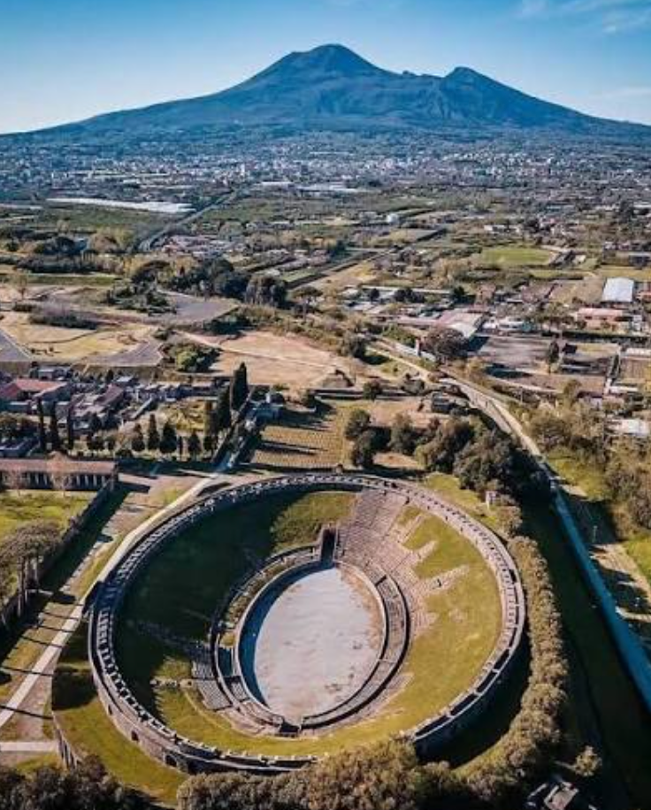

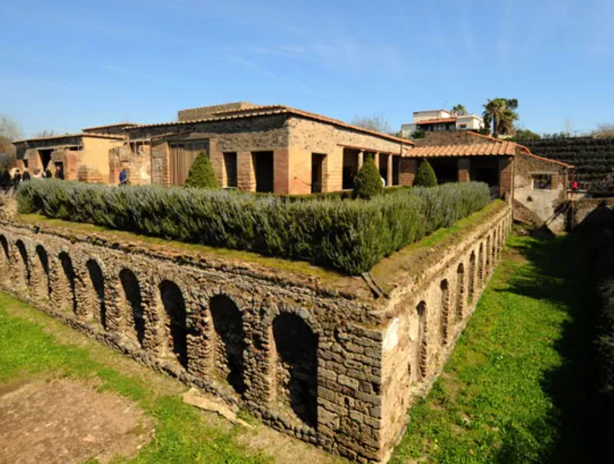
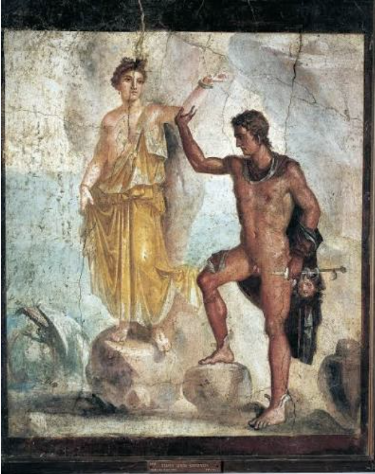
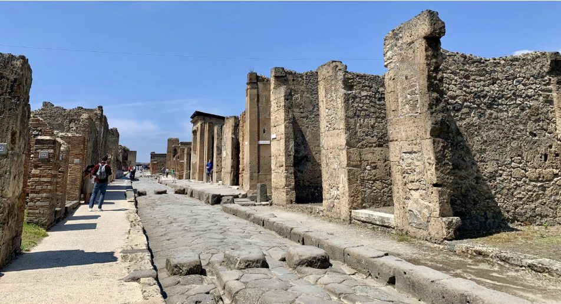
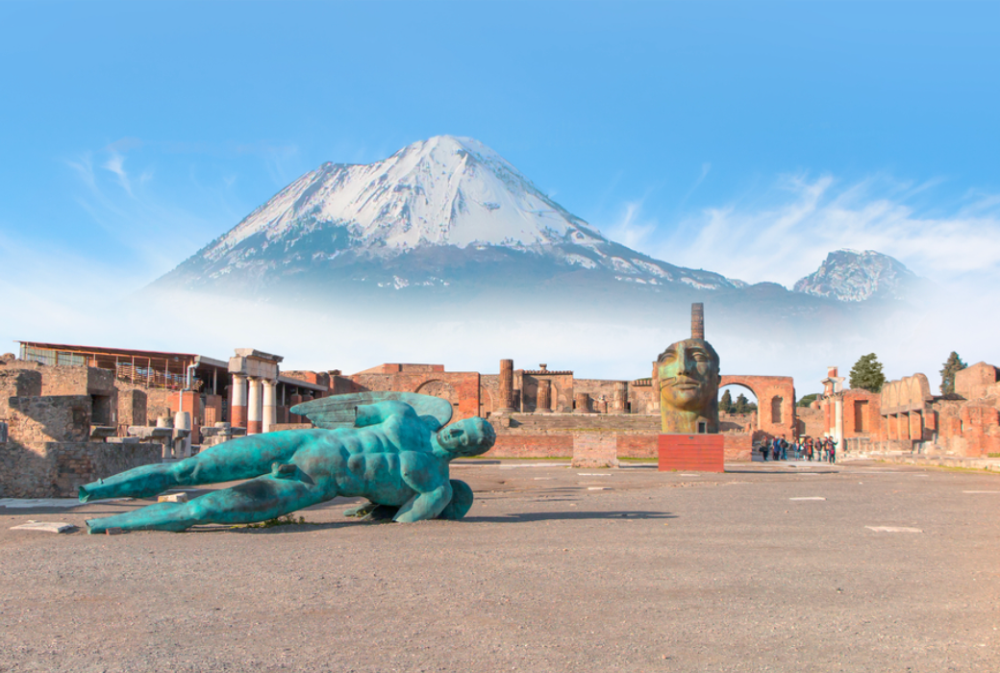
L’eruzione che interruppe la vita urbana.
Una visita comoda senza cercare di vedere tutto.
Meno caldo e più tempo per esplorare le aree aperte.
Non tutte le esperienze entrano nello stesso fine settimana. Usa questa guida per costruire il tuo itinerario in base ai tuoi interessi, tra archeologia, gastronomia e storia.

Architettura, prospettiva, acqua e paesaggio lavorano insieme come manifestazione assoluta del potere.
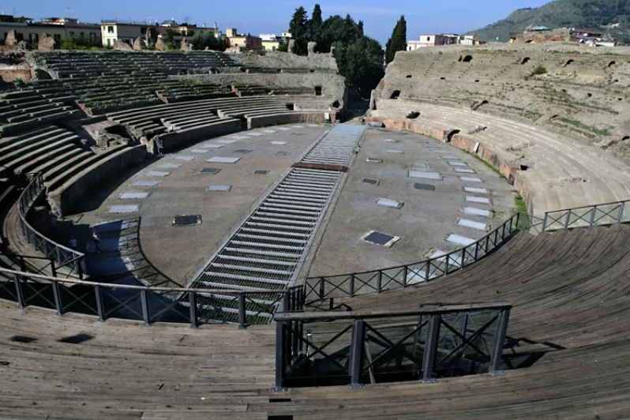
Le gallerie sotterranee rivelano l’infrastruttura che sosteneva gli spettacoli romani.

Le colonne registrano le oscillazioni del suolo vulcanico dei Campi Flegrei.

Il grande anfiteatro e la memoria della scuola dei gladiatori collegano architettura, spettacolo e rivolta.
La cucina napoletana lavora con pochi ingredienti, preparazione precisa e identità popolare. Pizza, pasta, fritti, caffè e dolci raccontano la storia meglio di qualsiasi lista generica di “cibo italiano”.
Quattro modi per capire il piatto che Napoli ha regalato al mondo.

Pomodoro, mozzarella e basilico: la sintesi visiva e gustativa di Napoli.
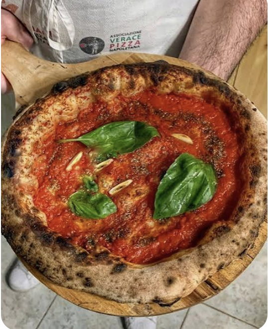
Pomodoro, aglio, olio e origano — senza formaggio.
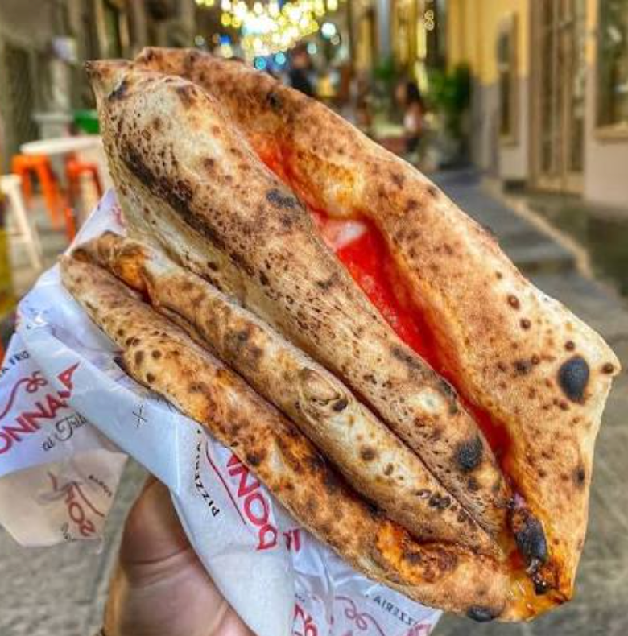
Piegata in quattro, da mangiare camminando.
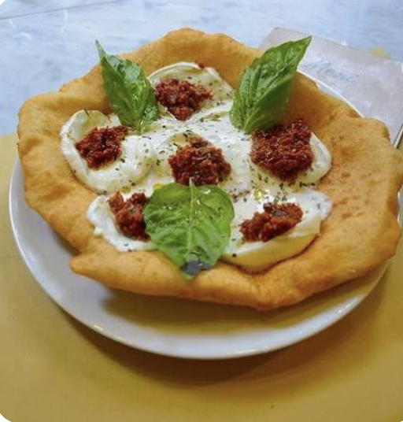
Impasto fritto, ripieno caldo e consistenza esuberante.
Il lato popolare, rapido e irresistibile della città.
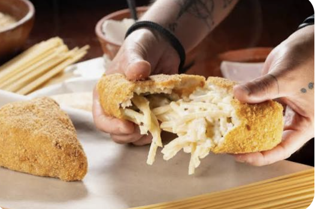
Pasta cremosa, impanata e fritta.
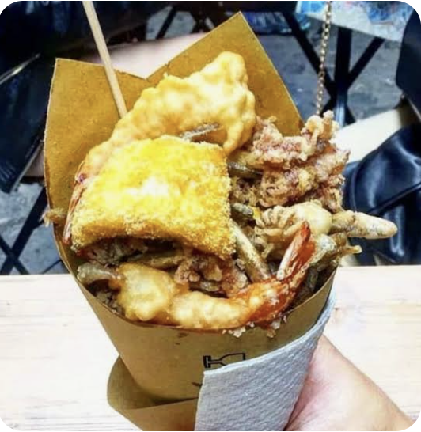
Un cono di fritti da mangiare per strada.
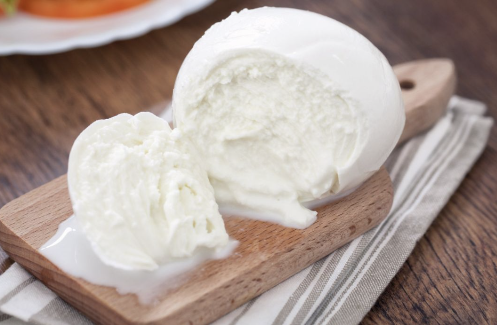
Prodotto simbolo della Campania.
Ricette di tempo, pentola e memoria familiare.

Patate, pasta e formaggio affumicato in una consistenza avvolgente.
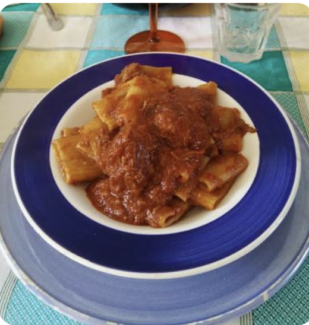
Un sugo intenso a lunga cottura.
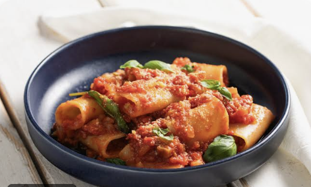
La pasta tubolare tipica della regione.
Caffè, dolci e il rito di finire bene.

Strati croccanti, ricotta e profumo agrumato.
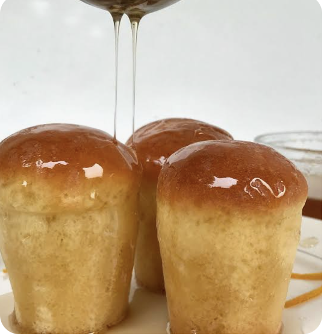
Dolce morbido imbevuto di sciroppo; tradizionalmente con rum.
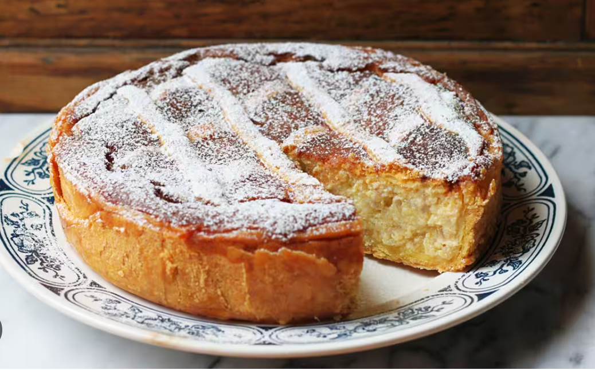
Ricotta, grano e fiori d’arancio.
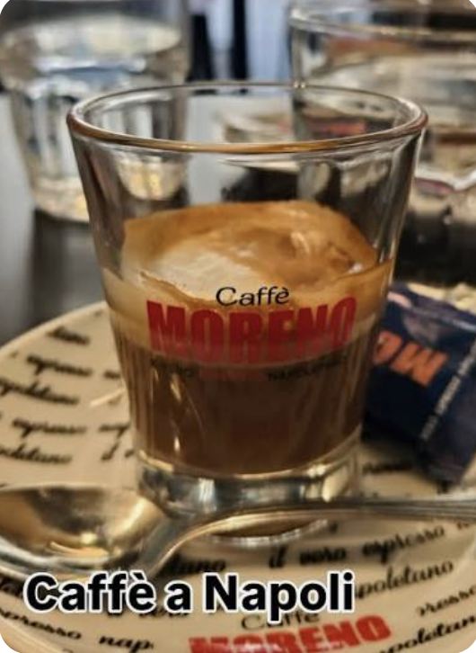
Corto, intenso e circondato da un rituale.
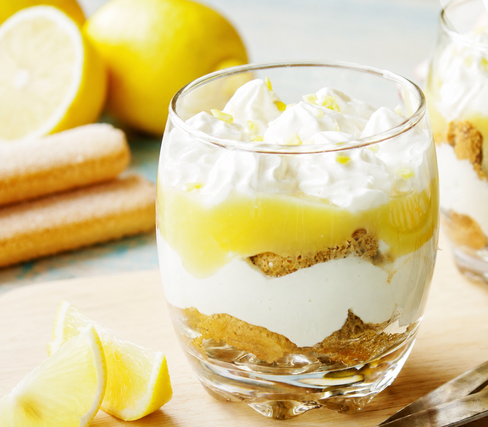
Un’estensione regionale legata alla costa vicina.
Il “gelato napoletano” a tre colori è diventato famoso all’estero. A Napoli, però, si preferiscono gelati densi, cremosi e costruiti attorno a ingredienti freschi e gusti della casa.

Conosciuta per il latte fresco, la consistenza cremosa e i coni artigianali preparati in casa.

Un’istituzione storica napoletana, ideale per scoprire il lato più intenso e artigianale del cioccolato locale.

Gusti moderni, consistenze generose e una lettura più contemporanea del gelato napoletano.
Dai priorità alle esperienze essenziali. Caserta, Pozzuoli e Capua sono estensioni interessanti, ma non tappe obbligatorie.
Napoli Centrale è collegata al nodo di Garibaldi. Attenzione ai nomi: metropolitana urbana, treni regionali e rete EAV/Circumvesuviana sono sistemi diversi.
Usa la Linea 1 da Garibaldi per Duomo, Università, Municipio e Toledo. In base all’alloggio, può essere pratico anche un taxi ufficiale.
Segui le indicazioni per Napoli Garibaldi/EAV e prendi la linea Napoli–Sorrento fino a Pompei Scavi–Villa dei Misteri, vicino all’ingresso di Porta Marina.
I treni regionali partono da Napoli Centrale. La Reggia è di fronte alla stazione di Caserta, quindi è facile senza auto.
Il percorso migliore dipende dalla meta esatta. Per anfiteatro, Macellum o centro, controlla l’itinerario del giorno e la stazione più comoda.
Rimane sotto le strade, dentro le ricette, nelle pietre di Pompei e nella presenza costante del Vesuvio. Il viaggio comincia quando si capisce che tutto appartiene alla stessa storia.